长按播放

长按播放
2019年末，中国高校又发生一起学生疑因不堪导师压榨、侮辱而自杀事件。2020年1月5日，南京邮电大学针对材料学院2017级一名研究生意外死亡事件通报称，取消该同学导师张某研究生导师资格，但未说明调查进展。
而2018年岁末上海同济大学医学院2016级肿瘤学硕士研究生陆经纬坠楼身亡一事，仍记忆犹新。陆经纬家属认为，其导师陆琰君对陆经纬的“压迫”，或是他选择自杀的重要原因。
据不完全统计，2014年以来中国高校学生权益受严重侵犯事件至少十几起。大学师生关系出问题了吗？什么才是正常的师生相处之道？
2018年4月，财新网发起一份关于高校师生关系的调查问卷，试图探究高校师生相处边界与现状。截至5月底，共收到384份有效问卷，除国外和中国香港外，问卷还涉及中国24个省份，以北京收回的问卷最多，占近三分之一。
下面是所有问卷数据的分析呈现。
被访问者中，女生比男生多72人。
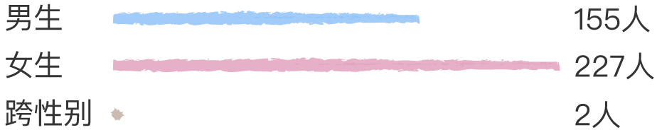三成的受访者帮老师做过与科研、教学无关的事情，其中男生比例比女生高出8%。
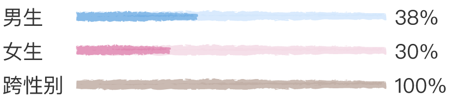这些“私事”中，以做“未得到报酬的脑力劳动”占比最大，达55%，包括无偿为老师做PPT、写演讲稿或论文、做翻译等。
其次是帮老师跑腿，例如打饭、收取快递、打印资料、买东西等。
打扫卫生
照顾其家人（老人、孩子）
饭局挡酒

办理程序性手续包括帮老师报销、填写行政类表单、写项目或报奖申请等。
发生性关系
其他私事
占用时间
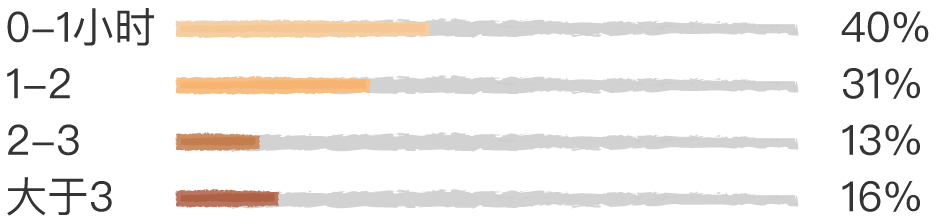发生频率
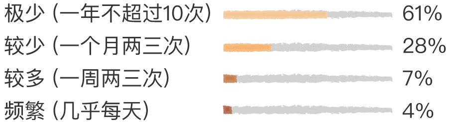心理受到干扰的被调查者占比近三分之一。
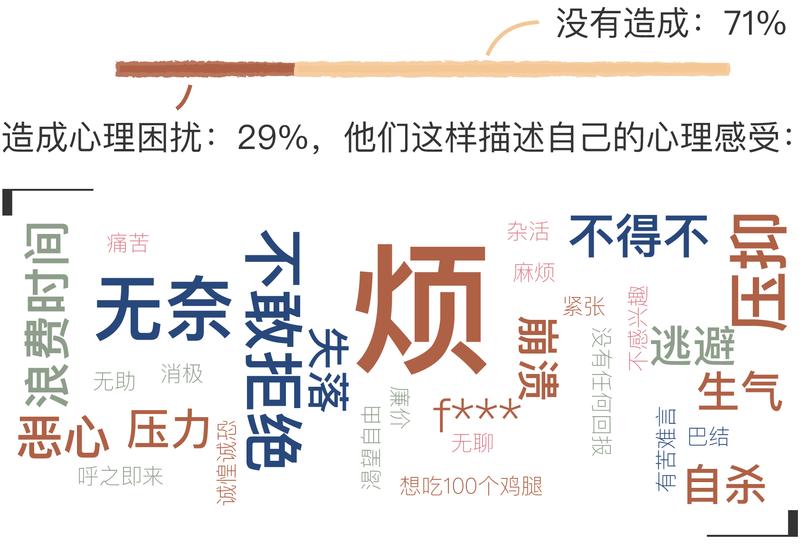因帮助老师做私事而造成心理困扰的38人中，34%的人未曾进行任何求助。
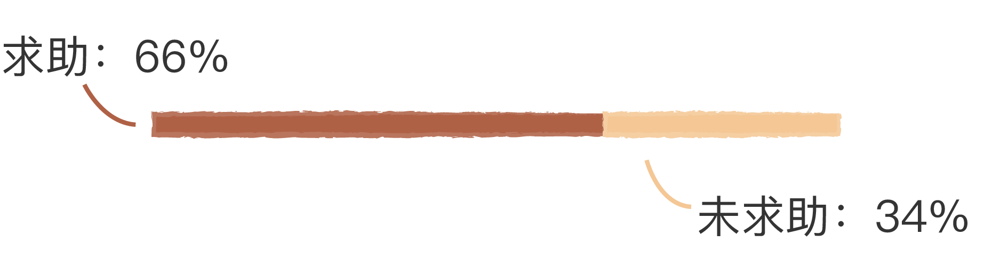
大部分受访者选择向朋友诉说，没有任何一名受访者选择向学校求助。
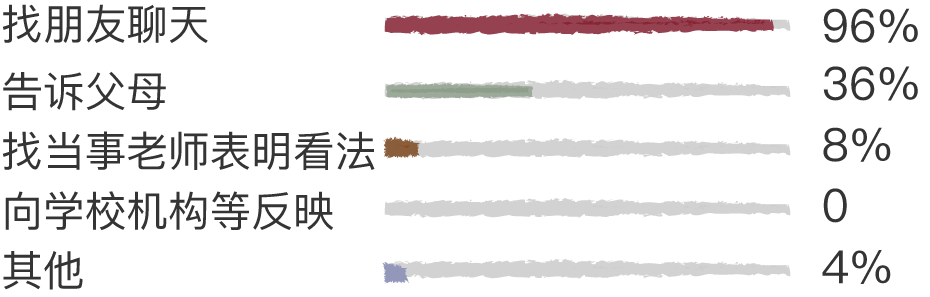绝大学生得到的反馈都是，再忍忍。
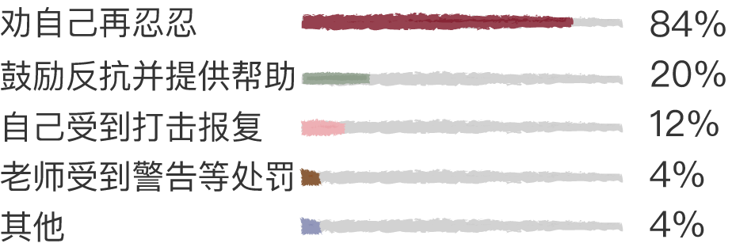求助的人中，对反馈感到满意的仅占8%。
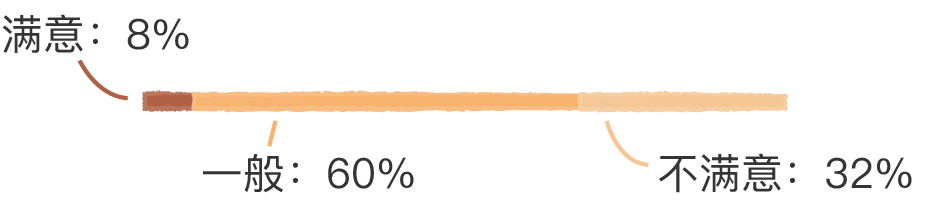
对和老师的关系评价在“一般”及以上的占九成。
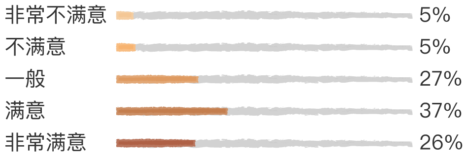随着做私事频率的增加，学生与老师的关系直线下降。从调查结果看，如果老师每天都安排私事，给学生造成心理困扰的可能性是百分之百；如果只是偶尔帮忙，如一个月一两次，则造成心理困扰的比例下降到14%。
问卷反映出的师生关系总体是积极健康的，帮老师做过私事的被调查者比例占少数（三成），每次花费的时间以一小时之内居多（四成），帮忙的频率以一年内不超过10次居多（六成），与老师的关系达到一般及以上评价的接近九成。
但问题也确实存在。
据媒体报道，此前北京航空航天大学“长江学者”陈小武被举报性骚扰，是通过北航纪委反映的情况，中山大学社会学与人类学学院教师张鹏涉嫌性骚扰也是由五名女性向中山大学纪委实名举报。
高校纪委是个什么性质的机构？
财新记者浏览了几所985大学的纪检监察网，大多是对党员违反党纪政纪的举报，并无针对学生投诉老师或学校的专门受理通道。即高校的纪检监察部门主要是对党员的约束，处理学生投诉略微勉强。
如果没有达到陈小武事件的程度，仅仅是学生对师生关系不满，那么投诉渠道更狭窄。一是学生并不倾向于向学校反映此种情况：问卷显示，在给老师办过私事的学生中，近三分之一的学生认为给自己造成了心理困扰，这些人中逾九成选择的解决途径是与朋友聊天吐槽，向学校相关部门反映情况的人数为零；二则学校指引并不明晰。财新记者随机采访了三名在校大学生，两名同学表示其入校时未接受过关于学生投诉内容的新生培训。他们提及在权益受到侵害时能想到的渠道包括学生会权益部、校长信箱及校园网上披露的投诉电话。但他们均未实施过投诉以及听到周边人投诉。
2004年爆发的上海交大博导遭研究生“罢黜”事件——9名博士联名上访，先是写信反映，随后向研究生院提出申请、找校党委书记和校长反映情况，最终学院回避直接导师，并在博导并未签字同意的情况下为9名博士重新选择了导师。
此次事件虽以学生的诉求得到满足而告终，但毕竟是少数情况，即使是这9名博士，解决此事的路径也不是遵循某种既有制度，而是在不断试探中维护自己的权益。如此模糊的举报之路，加之高校与教师处于天然的“利益共同体”中，也就不难解释受害者为何选择沉默。
学者王巍、曾贞在文章《英国高等教育独立审查员制度的立法与实施》中，探讨了英国高校处理学生投诉的流程。
2004 年，英国出台了高等教育法案，取消了视察员的裁判权，结束了学生纠纷处理分而治之的局面，首次将该问题纳入全国统一的程序标准中——实施学生投诉审查计划(Review of Student Complaints)，创建了全球唯一的高等教育独立审查员制度(the Independent Adjudicator for Higher Education)。
2004 年，高等教育独立审查员办公室(the Office of the Independent Adjudicator for Higher Education，下称 OIA)被任命为英格兰和威尔士学生投诉审查计划的指定执行机构。
OIA 不会向学生收取任何费用，但大学须根据其规模，缴纳会员费以及案件受理费。但OIA做出的决议不具有法律强制性，只是意见性的，一旦大学没有服从建议的要求，这种行为将被报告至 OIA 的董事会，并在年度报告中公开。
晓静（化名）在国内某高校读研，因为导师爱喝酒，即便是女生，各种节日也不得不常被拉去喝酒。有一次晓静正值生理期，拒绝喝酒，导师当场脸色难看。吸取“教训”，此后晓静即使处于生理期也只能照喝不误。导师喜欢在KTV唱地方戏，晓静不会唱也硬唱。
“哄导师开心吧！这其实是一种交换，我不花钱，能换来我想要的东西，那为什么不去呢？”
晓静认为把老师哄开心就能获得出国访学、发论文的机会和资源，她的个性也由一个一心钻研学术、较为内向的人变得“社会”，后来她的师弟师妹不想去应付导师时，她反而会劝他们应该去。
为什么不反抗？晓静告诉财新记者，她打算读博士，而导师在学术领域较权威，她认为自己后半生在学术上导师是唯一的引路人。而导师对师生关系的看法较为传统封建，类似一日为师终身为父的想法。
对于心中的不满，晓静有时候会找朋友倾诉，但从没想过向谁“反映”。 “你必须适应它。” 晓静这样开导自己。除了喝酒唱歌，帮导师做与自己研究方向无关的事情很日常，包括给导师写演讲稿、做PPT等，“没有拒绝的余地。”
清华大学社会学教授郭于华认为，师生关系不同于传统社会中“拟亲属化”的师徒关系——学徒对师傅言听计从，还要担负许多职业之外的生活杂务；也不是“老板-员工”式的雇佣关系，易造成学生对导师的依附性，从而损毁学生的独立精神。
中国高校中，不少学生称自己导师为“老板”，此现象在2004年就引起过讨论。
从“老师”到“老板”的变化，与“老板制”由美国传入中国有关。学者周光礼在其文章《从导师制到老板制：中国博士培养模式的制度变迁》中提到，中国语境下的老板制与美国有实质的不同，美国的老板制是大学科研资源优化配置的一种方式，且有学校学术制度的保障，而中国大学科研中的老板制则是功利主义的产物，是师生关系功利化的结果。
“在这种情况下，师生关系演变为一种真正的雇佣关系——导师则需要学生参与课题，成为自己‘项目组’的‘劳动力’，至于学生能从中学到什么，以后成长为怎样的人，他也并不在意。”
北京师范大学国际与比较教育研究院副教授孙进在其文章《德国如何规范师生关系》中提到：“德国大学教授都有自己的秘书，会帮助教授处理报销和日常管理方面的事务，不需要学生承担。与此同时，德国教授的教席中还有专门的学生助理、学术助理、学术雇员等多种岗位，全都是制度化的工作关系。受聘者是和大学签订正式的劳动合同，因此，也不是教授的‘私人家仆’。”这些从制度层面避免了导师与学生之间公私界限模糊的情况。
对于导师是否能对学生尽责、师生发生矛盾如何调解，德国通过实行双导师辅导制度，减弱学生对单一导师的依附关系；其次用《辅导协议》规范和约束导师和研究生的关系。该协议详细规定了辅导的内容和范围、见面讨论的次数和频率、双方的各种权利和义务；最后，引入冲突协调机制和更换导师的机制。在德国，当博士生和导师出现矛盾时，可以寻求学院内部信任的老师或学校内专职协调员的帮助。必要时可启动退出或更换导师机制。
2018年11月14日，教育部发布文件《新时代高校教师职业行为十项准则》，其中第五条规定： “……不得要求学生从事与教学、科研、社会服务无关的事宜。”第六条 “……不得与学生发生任何不正当关系，严禁任何形式的猥亵、性骚扰行为。”
同时发布《教育部关于高校教师师德失范行为处理的指导意见》，规定：
“对高校教师师德失范行为实行‘一票否决’……情节较轻的，给予批评教育、诫勉谈话、责令检查、通报批评，以及取消其在评奖评优、职务晋升……等方面的资格。担任研究生导师的，还应采取限制招生名额、停止招生资格直至取消导师资格的处理。以上取消相关资格处理的执行期限不得少于24个月。情节较重应当给予处分的，……包括警告、记过、降低岗位等级或撤职、开除……情节严重、影响恶劣的，应当……撤销其教师资格。是中共党员的，同时给予党纪处分。涉嫌违法犯罪的，及时移送司法机关依法处理。”
“高校要建立健全师德失范行为受理与调查处理机制，指定或设立专门组织负责，明确受理、调查、认定、处理、复核、监督等处理程序……对高校教师的处理，在期满后根据悔改表现予以延期或解除，处理决定和处理解除决定都应完整存入个人人事档案。”
北京航空航天大学在处理陈小武事件时曾通报“学校将以此为鉴，制定相关实施细则，健全相关机制”，希望这不会成为一句空话。
记者：丁苗
插画/设计：李靖华
设计/开发：刘佳昕
监制：黄晨 韦梦 耿铭钟
财新数据新闻中心出品
订阅财新通，阅读更多精彩重磅报道
在校学生以edu邮箱注册，340元即可享校园优惠。含：财新通一年(原价498元)+财新英文一年兑换码(原价200$)
立即行动吧↓↓↓
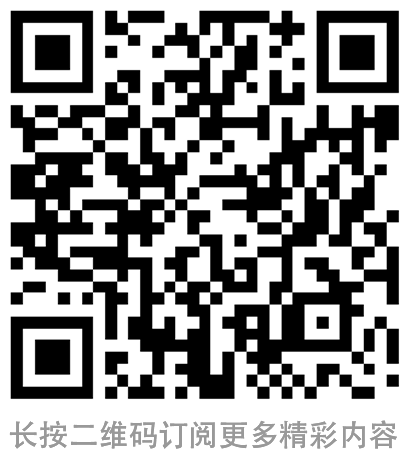